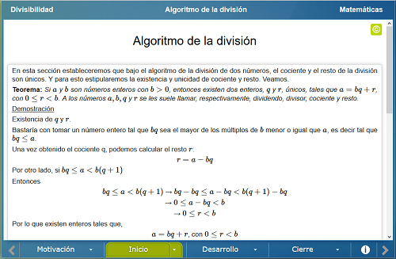

Divisibilidad
Divisibilidad
 Divisibilidad
Divisibilidad
Conocer el proceso del algoritmo de Euclides y utilizarlo en diversos problemas. Podemos calcular el máximo común divisor (MCD) y expresar al máximo común divisor como una combinación lineal. Este algoritmo funciona no sólo para los números naturales, sino para cualquier conjunto en el que exista una "división con residuo" y para establecer criterios de divisibilidad.
Escena en la que se muestra un video n video de la Universidad Católica de Murcia en el que se exponen algunos criterios de divisibilidad.
En esta sección estableceremos que bajo el algoritmo de la división de dos números, el cociente y el resto de la división son únicos. Y para esto se demuestra formalmente la existencia y unicidad de cociente y resto.

Esta sección consta de tres escenas, en las que se propone dividir un número por siete, por once y por trece respectivamente. Para esto, se genera al azar del lado superior derecho un número, y se sugiere que por medio de lápiz y papel se realice la división; independientemente de la respuesta, se puede verificar del lado izquierdo de la escena y observar la conclusión del lado inferior derecho.
En la primera escena de esta sección se presentan otros criterios para la división que pueden ser útiles. El criterio para dividir por 19, por 29 y por 31 respectivamente. Se muestran ejemplos en cada caso para su mejor comprensión.
En la segunda escena se muestra formalmente el criterio de divisibilidad en el caso general.

| Diseño del contenido | Gustavo Magallanes Guijón |
| Diseño funcional | Gustavo Magallanes Guijón |
| Programación | Gustavo Magallanes Guijón |
| Diseño gráfico | Ricardo López Gómez |
| Coordinación | Leticia Montserrat Vargas Rocha |
| Diseño funcional | Julio Arnoldo Prado Saavedra Victor Manuel Amezcua y Raz |
| Programación | Julio Arnoldo Prado Saavedra Victor Manuel Amezcua y Raz |
| Diseño gráfico | Francisco Varela Fuentes |
| Coordinación | Leticia Montserrat Vargas Rocha |
| Desarrollo del contenedor | Oscar Escamilla González |
Los contenidos de esta unidad didáctica interactiva están bajo una licencia Creative Commons Reconocimiento-NoComercial-CompartirIgual.
La unidad didáctica fue creada con Arquímedes, una herramienta de código abierto.
La unidad didáctica contiene escenas elaboradas con Descartes, una herramienta de código abierto.
LITE - UnADM 2014